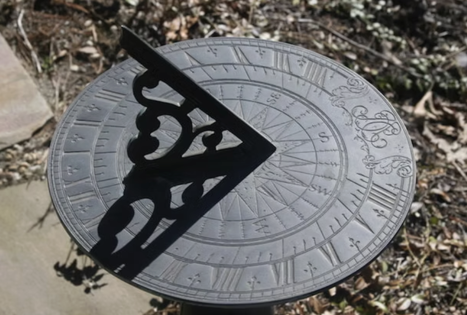
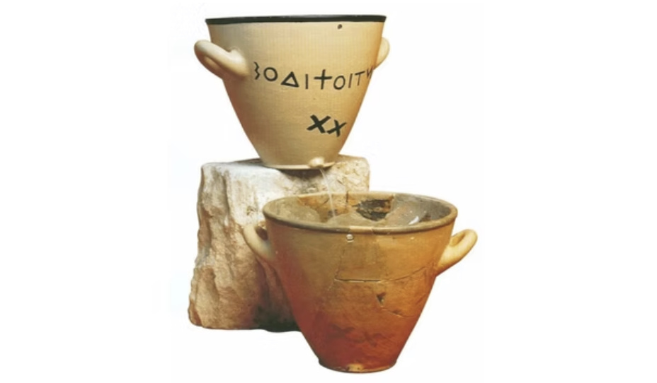
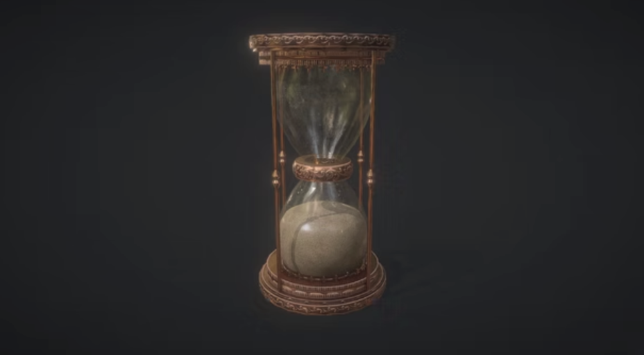

Research for Ephemeral Cycle
Memento Mori Tradition
The memento mori tradition began in the Middle Ages and used skulls, hourglasses, and
wilting flowers to remind people of death. The aim was not fear but to encourage a good
and present life.
Important historical examples include Hans Holbein the Younger's hidden skull in "The
Ambassadors" (1533), which uses anamorphosis to reveal a distorted skull symbolizing
mortality, and Thomas Richard Williams' vanitas photograph with an hourglass and book
from the 19th century.
Contemporary examples include Damien Hirst's "For the Love of God" (2007), a platinum
cast of a human skull encrusted with diamonds, commenting on wealth and death, and Ricky
Swallow's "Salad Days" (2005), a modern take on vanitas still life with carved wooden
skulls and fruit evoking childhood memories and transience.
Other notable works: José Guadalupe Posada's "La Calavera Catrina" (1910), a zinc
etching satirizing Mexican society with a skeletal figure, influencing Day of the Dead
imagery; Audrey Niffenegger's modern memento mori illustrations; and Patrick Villas'
"Memento Mori" (2020), a print exploring mortality themes.


Instagram Reference
View on Instagram
Gabriel Barcia-Colombo – “For Those Who Wait” (2011)
This is a large-scale interactive video-mapping sculpture featuring clocks that melt, distort,
and transform. Viewers could interact with a crank/sensor to affect the clocks’ behavior. The
work explores time spinning out of control and the fragility of both time and technology. It has
strong memento mori undertones through the failing clocks, but leans toward tension,
instability, and technical drama.
Barcia-Colombo’s piece feels dramatic and slightly anxious (melting clocks, technical failure stories). Meanwhile, my goal in my work is to avoid complexity, focusing instead on simple mechanical beauty (music box, rotating film, shadows) to celebrate life rather than highlight fragility or failure.

Jim Campbell: Digital Watch
jimcampbell.tv
Jim Campbell – “Digital Watch” (1991)
This interactive video installation shows a large analog watch on screen. The viewer’s image
appears around the watch normally, but inside the watch area it is a 5-second delayed,
fragmented
version of themselves. Cameras and custom electronics create a temporal distortion, making
viewers
feel “trapped” inside the watch’s time. It explores self-perception, delayed time, and
mortality.
Campbell’s work creates a sense of unease and self-consciousness (seeing a delayed version of yourself). Meanwhile, my goal in my work is to use mechanical film, shadows, and music to evoke warm, poetic, and comforting presence, rather than digital delay and distortion.
Philosophical Perspectives
On the philosophical side, Augustine wrote that time only exists in the mind: the past
is memory, the present is attention, and the future is expectation. Kant said time is a
lens our mind puts on the world.
Heidegger believed that knowing we will die helps us live more truly in the present.
Ecclesiastes repeats “everything is vanity” and describes endless natural cycles that
never bring lasting satisfaction.
Studies by Wittmann & Lehnhoff (2005) and Ferreira et al. (2016) show that adults feel
time passes faster as they grow older, supported by empirical evidence that adults
systematically underestimate durations as they age.
Additional details: Bergson's concept of "duration" emphasizes subjective time as a
continuous flow, contrasting with objective clock time, which aligns with the project's
exploration of personal experience versus mechanical measurement.
Cosmological Perspectives
For the cosmological view, Whitrow’s book "What Is Time?" (1972) explains that the
first clocks were based on the movement of the sun and stars.
Ancient Egyptians used the rising of the star Sirius to start their year and divided
the day into 24 hours. Early devices included sundials, water clocks, and shadow-casting
obelisks.
The moving shadow created by the directional light in the final piece comes straight
from these ancient ways of telling time.
Additional details: In Mesoamerican cultures, like the Maya, time was cyclical, tied to
astronomical events such as solar eclipses, which influenced calendars and rituals
emphasizing renewal and mortality, similar to the endless cycles in Ecclesiastes.



Physical Perspectives
On the physical side, the definition of one second has changed from the length of a day
divided many times to exactly 9,192,631,770 vibrations of a caesium atom.
Whitrow and other sources describe the long history from candle clocks and incense
clocks to pendulum clocks, marine chronometers, and today’s atomic clocks.
Additional details: The evolution includes Galileo's discovery of pendulum isochronism
in 1583, leading to Christiaan Huygens' pendulum clock in 1656, which improved accuracy
for navigation and science.


Personal Reflections
As a secondary school student, I felt time accelerate, despite wishing those tough
years would end sooner. By the time I noticed, they were gone.
Recently, my New Year’s resolution to “cherish time”. However, I’ve struggled to define
what this means. Despite my efforts to ‘keep up’ with time by working hard and
accomplishing as much as possible, I still feel I’m not making good use of it.
This realization has sparked an intriguing question: what does it truly mean to cherish
time?
Typically, time is perceived as a linear progression linking past, present, and future.
However, I believe it’s possible to perceive time as encompassing only the 'now'—the
only truly 'existing' moment.
The past is unchangeable, and the future is uncertain, as no one knows how long they
will live. The present is the only moment we can truly control.
Yu Yan Peng once said, 'If you are depressed, you are living in the past; if you are
anxious, you are living in the future; if you are at peace, you are living in the
present.'
Having experienced significant periods of depression and anxiety, I deeply feel that
these emotions have wasted much of my time, pulling me away from the present.
This insight shapes my memento mori artwork, which seeks to anchor viewers in the 'now'
to find peace and mindfulness.
Perhaps the true way to cherish time is to ignore it entirely, focusing solely on the
task at hand and immersing myself in the experience without thoughts of time.
References
Balcells, M. (2015). Adrian Bardon, A brief history of the philosophy of time. Oxford
University Press (2013), 200 pp., $19.95. Philosophy of Science, 82(1), 152–155.
Bennett-Carpenter, B. (2017). Death in documentaries: The memento mori experience.
Brill.
The Getty. (n.d.). Vanitas still life. Retrieved September 16, 2025, from https://www.getty.edu/art/collection/object/104MP7
Google Arts & Culture. (n.d.). Vanitas still life with skull, open book with glasses
and hourglass, the sands of time. Retrieved September 16, 2025, from https://artsandculture.google.com/asset/vanitas-still-life-with-skull-open-book-with-glasses-and-hourglass-the-sands-of-time/UAFt1oa-2-FxYg?hl=en
Martin, A. (2024, November 6). 15 timekeeping devices and inventions in history. Paymo.
Retrieved September 16, 2025, from https://www.paymoapp.com/blog/timekeeping-devices/
National Gallery, London. (n.d.). Hans Holbein the Younger, The Ambassadors, 1533.
Retrieved September 16, 2025, from https://www.nationalgallery.org.uk/paintings/hans-holbein-the-younger-the-ambassadors
New International Version. (n.d.). Ecclesiastes 1:2-11. Bible Gateway. Retrieved
September 24, 2025, from https://www.biblegateway.com/passage/?search=Ecclesiastes+1&version=NIV
Noonan, E., Little, M., & Kerridge, I. (2013). Return of the memento mori: Imaging
death in public health. Journal of the Royal Society of Medicine, 106(12), 475–477. https://doi.org/10.1177/0141076813501330
TheArtStory. (n.d.). Memento mori and vanitas. Retrieved September 16, 2025, from
https://www.theartstory.org/definition/memento-mori-vanitas/
Whitrow, G. J. (2003). What is time? Oxford University Press.